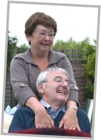
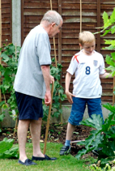

About terry & Motor Neurone disease

For those of you who aren’t aware, MND, as it is known, removes the connection between your brain and your muscles. This in turn causes degeneration and wasting of those muscles, loss of mobility in the limbs, difficulty with speech, swallowing and breathing.
And before most of this occurs you lose ALL dignity, relying on others for your basic everyday needs.
With Terry nearly all of this happened within two and a half years of diagnosis.
Timeline From just before TERRY was diagnosed until he died.
What is motor neurone disease?
Significant points in last 3 years or so of Terry’s life.
June 2005 - first noticed right wrist was weak when trying to open front door and peg washing.
February 2006 - After various tests diagnosed with MND and by this time right arm and legs getting weaker.
June 2006 - Using walking stick as very unbalanced.
August 2006 - Terry working from home but could only be left on own for short periods.
December 2006 - Stopped working from home as now very weak in both arms and legs.
February 2007 - Using wheelchair around the house and outdoors. Also stair lift installed. Could only stand with assistance.
September 2007 - Terry's speech started to get more difficult to understand. Had a mild heart attack.
October 2007 - Movement so difficult had to install hospital type bed and also hoists.
March 2008 - Neck muscles weakened. Had to be fed and given all drinks. Terry was unable to perform any task unaided.
June 2008 - Communication via speech now almost impossible, involved immense effort.
July 2008 - Started to lose his appetite and lost a lot of weight.
August 2008 - Social life almost non-existent, due to carers etc. had to be in bed by 7:30
September 2008 - Terry died suddenly.
During the last 3 months Terry’s quality of life deteriorated dramatically. Yet he still laughed and remained positive, he was an inspiration to me for all my life, how he dealt with those last couple of years will inspire me forever.
His death was expected at some stage but still came as a surprise, with it I not only lost a brother but I lost my best friend.
Watching him die over that whole period was the most horrendous episode of my life. It broke my heart on so many levels. If I, along with my family, friends and acquaintances can raise some money for the Association then this may help to reduce the effects for others.


Terry, family and friends on the sponsored walk in 2007.
June 2008, 9 weeks before Terry died.